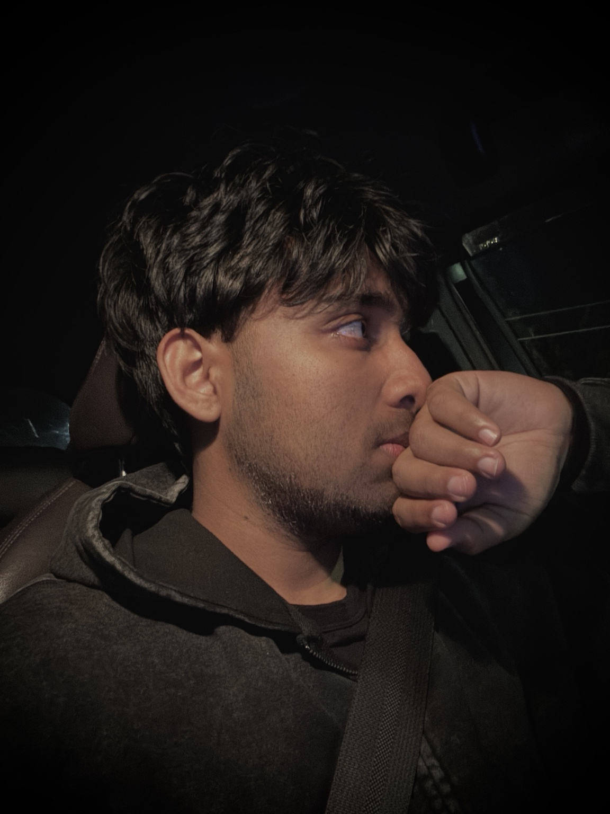

Memories
She was the moment I missed, but as time goes by, her face slowly fades into a blur.
ABOUT ME
My name is Rasin Arafat. I am a student in Australia who enjoys learning about technology, visiting new places, spending time with friends and following football.

MY STORY
She was the moment I missed, but as time goes by, her face slowly fades into a blur.
Studying in Australia gives me the chance to learn in a new environment, meet different people and develop both academic and personal skills.
I enjoy learning about IT and how websites and computer systems work. Building this portfolio is one way I can practise what I learn.
I like exploring natural places and city locations. I keep photos from these trips because they help me remember important experiences.
Football is one of my favourite interests. I enjoy both playing and following the sport in my free time.
PORTFOLIO SAMPLE
NexusTech Solutions · Sydney, Australia
Assisted with network configuration, connectivity troubleshooting, router and switch setup, and basic network maintenance.
Vertex Digital Systems · Sydney, Australia
Provided technical support, troubleshot hardware and software issues, assisted with user accounts, and supported daily IT operations.
PROFILE
NEXT PAGE
My Gallery page contains photos from travel, student life and time with friends.